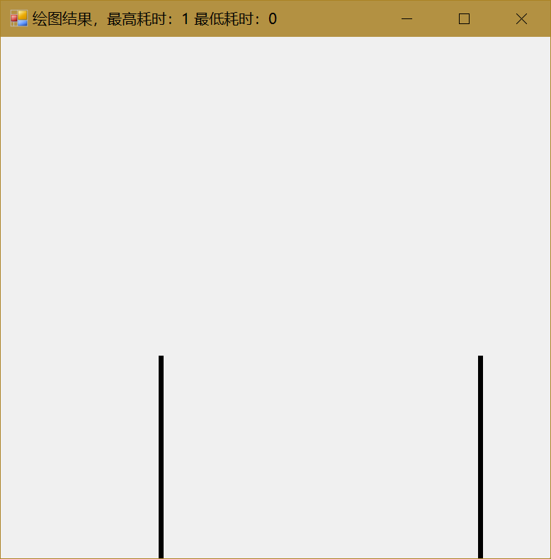
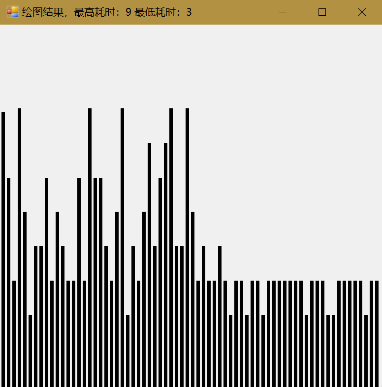
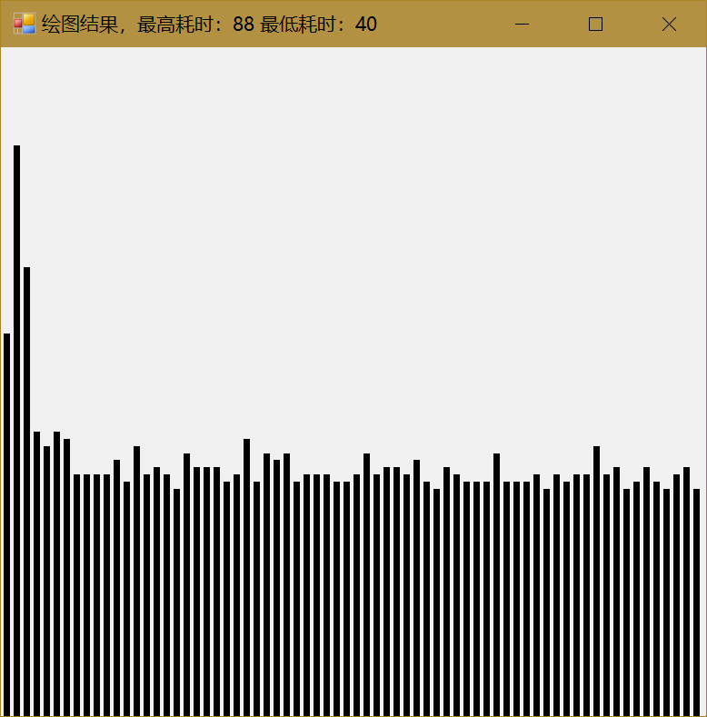
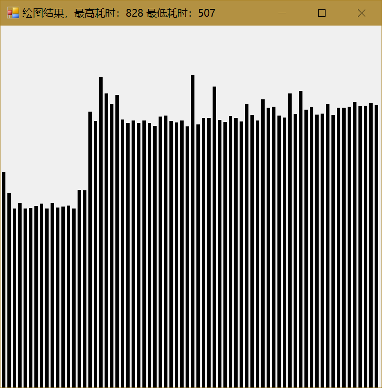

© 2019 《算法（第四版）》C# 题解 | Provided By 沈星繁
搜索解答
目前已完成到 2.5
2.3.31
上次更新：2019-02-13 发现了题解错误/代码缺陷/排版问题？请点这里：如何：提交反馈 。
题目
2.3.31
运行时间直方图。
编写一个程序，接受命令行参数 N 和 T，
用快速排序对大小为 N 的随机浮点数数组进行 T 次排序，
并将所有运行时间绘制成直方图。
令 N=10^3、10^4、10^5 和 10^6，
为了使曲线更平滑，T 值越大越好。
这个练习最关键的地方在于找到适当的比例绘制出实验结果。
解答
以下所有结果 T=70
N=1000

N=10000

N=100000

N=1000000

代码
using System;
using System.ComponentModel;
using System.Drawing;
using System.Linq;
using System.Windows.Forms;
using Quick;
namespace _2._3._31
{
public partial class Form2 : Form
{
private int N;
private int T;
public Form2(int n, int t)
{
InitializeComponent();
this.N = n;
this.T = t;
}
/// <summary>
/// 启动页面时启动后台测试。
/// </summary>
/// <param name="sender"></param>
/// <param name="e"></param>
private void Form2_Shown(object sender, EventArgs e)
{
this.Text = "正在绘图";
this.backgroundWorker1.RunWorkerAsync();
}
/// <summary>
/// 后台测试方法。
/// </summary>
/// <param name="sender"></param>
/// <param name="e"></param>
private void backgroundWorker1_DoWork(object sender, DoWorkEventArgs e)
{
BackgroundWorker worker = sender as BackgroundWorker;
QuickSort quick = new QuickSort();
double percentPerTrial = 100.0 / this.T;
double[] totalTime = new double[this.T];
for (int i = 0; i < this.T; i++)
{
double[] data = SortCompare.GetRandomArrayDouble(this.N);
totalTime[i] = SortCompare.Time(quick, data);
worker.ReportProgress((int)(percentPerTrial * i));
}
e.Result = totalTime;
}
/// <summary>
/// 更新后台进度方法。
/// </summary>
/// <param name="sender"></param>
/// <param name="e"></param>
private void backgroundWorker1_ProgressChanged(object sender, ProgressChangedEventArgs e)
{
this.Text = "正在测试，已完成 " + e.ProgressPercentage + " %";
}
/// <summary>
/// 测试完毕，进行绘图的方法。
/// </summary>
/// <param name="sender"></param>
/// <param name="e"></param>
private void backgroundWorker1_RunWorkerCompleted(object sender, RunWorkerCompletedEventArgs e)
{
if (e.Error != null)
{
MessageBox.Show(e.Error.Message);
}
//新建画布
Graphics graphics = this.CreateGraphics();
//翻转默认坐标系
graphics.TranslateTransform(0, this.Height);
graphics.ScaleTransform(1, -1);
double[] counts = e.Result as double[];
//获取最大值
double max = counts.Max();
//计算间距
double unit = this.Width / (3.0 * counts.Length + 1);
double marginTop = 100;
//计算直方图的矩形
Rectangle[] rects = new Rectangle[counts.Length];
rects[0].X = (int)unit;
rects[0].Y = 0;
rects[0].Width = (int)(2 * unit);
rects[0].Height = (int)((counts[0] / max) * (this.Height - marginTop));
for (int i = 1; i < counts.Length; ++i)
{
rects[i].X = (int)(rects[i - 1].X + 3 * unit);
rects[i].Y = 0;
rects[i].Width = (int)(2 * unit);
rects[i].Height = (int)((counts[i] / (max + 1)) * (this.Height - marginTop));
}
//绘图
graphics.FillRectangles(Brushes.Black, rects);
//释放资源
graphics.Dispose();
this.Text = "绘图结果，最高耗时：" + counts.Max() + " 最低耗时：" + counts.Min();
}
}
}